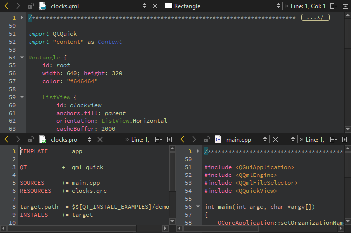

Split the editor view
Split the editor view or open the editor in a new window to work on and view many files on the same screen or on many screens.

View many files at the same time:
- To split the editor view into a top and bottom view, go to Window > Split, press Ctrl+E, 2, or select the (Split) button and then select Split.
The Split command creates views below the currently active editor view.
- To split the editor view into adjacent views, go to Window > Split Side by Side, press Ctrl+E, 3, or select Split > Split Side by Side.
The Split Side by Side command creates views to the right of the currently active editor view.
- To open the editor in a detached window, press Ctrl+E, 4, or go to Window > Open in New Window.
The new window behaves in the same way as the editor area in the main window. For example, you can split this window, as well. Documents are opened in the currently active editor window.
Move between views and windows
To move between split views and detached editor windows, go to Window > Go to Next Split or Window or press Ctrl+E, O.
Remove splits
To remove a split view:
- Place the cursor within the view you want to remove and go to Window > Remove Current Split.
- Press Ctrl+E, 0.
- Select the
 (Remove Split) button.
(Remove Split) button.
To remove all but the currently selected split view:
- Go to Window > Remove All Splits.
- Press Ctrl+E, 1.
See also How To: Edit Code, Detach views, and Edit Mode.